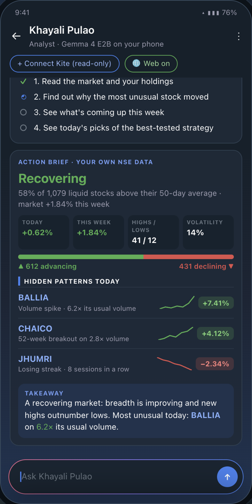
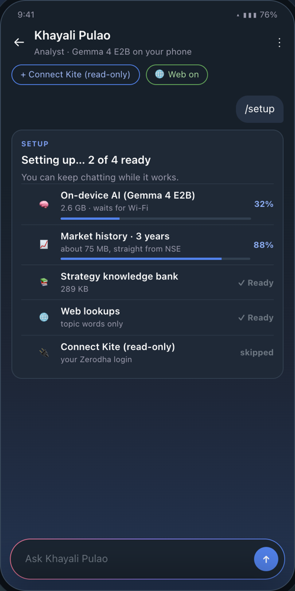
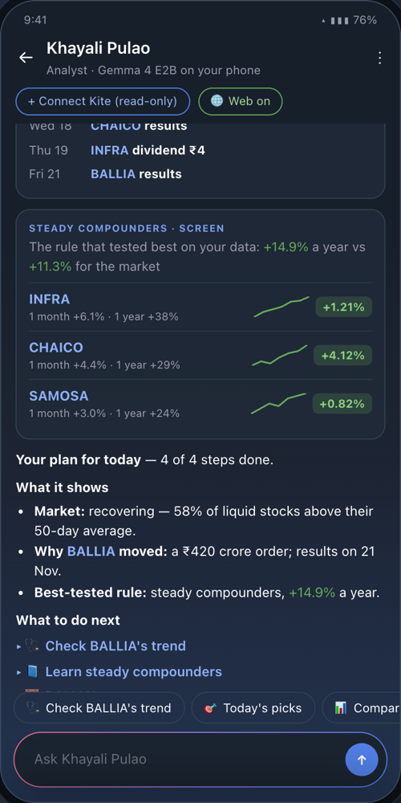
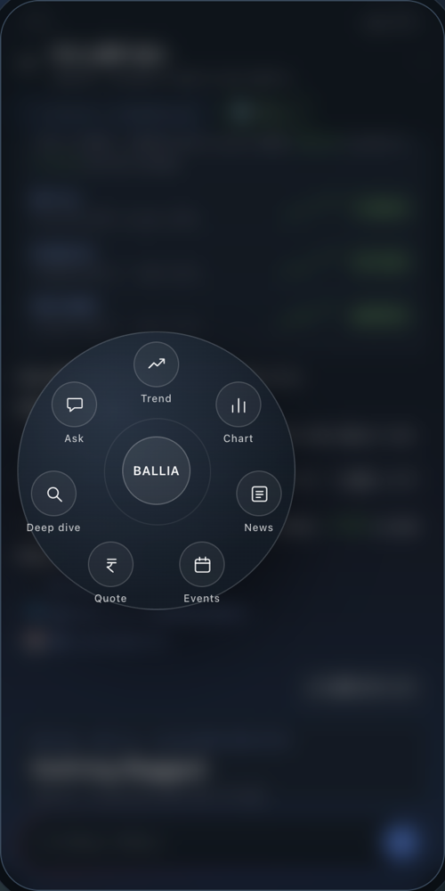
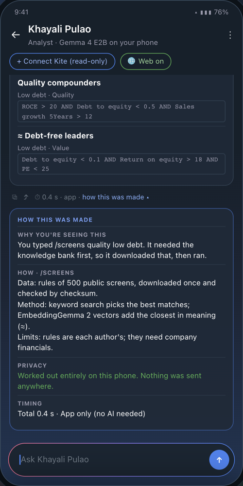
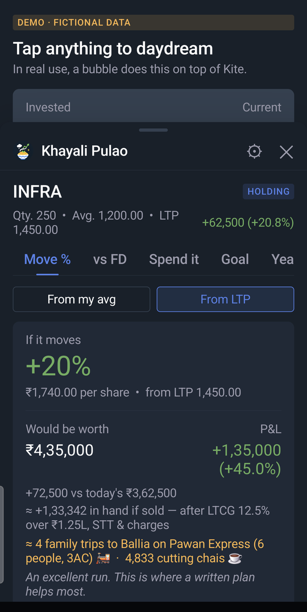
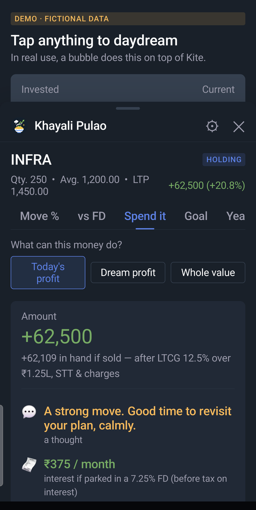
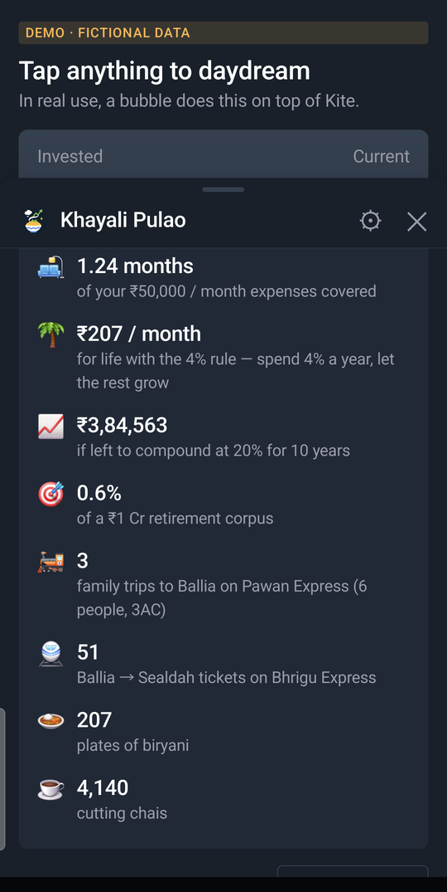
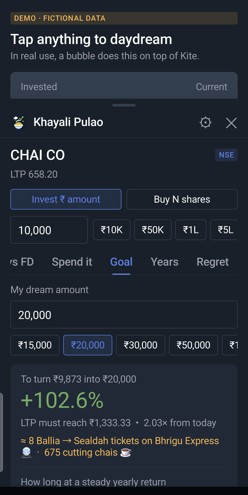

Private · AI and voice on your phone · open source · nothing to sign up for
Your private market advisor. Nothing leaves your phone.
Ask in plain words. Khayali Pulao makes a plan, runs every step on your phone with your own copy of NSE's market data, and hands you next steps you can tap. The AI runs on the phone too — no account, no server, no analytics.
ख़याली पुलाव (khayali pulao) — “imaginary pulao”, Hindi for daydreaming. Every investor does it; this does the maths properly.
Live replay of the app's chat · fictional data ·
🔒 Nothing leaves your phone
Most money apps send your portfolio to their servers, and most AI chats send your questions to the cloud. Khayali Pulao does neither. There is no Khayali Pulao server: nothing to sign up for, nothing to log in to, nowhere for your data to go.
🧠 The AI runs on the phone
Gemma 4 E2B, downloaded once (2.6 GB, checked by checksum), answers on the phone. Your questions and its answers are never sent to a cloud AI.
🎤 Your voice stays on the phone
Live voice uses Android's on-device speech recognizer only — the app never gets or keeps your audio, and there's no cloud fallback. Answers are spoken with an offline voice.
📱 Your data stays on the phone
Kite holdings are matched on the phone. Your NSE history, the analysis, backtests, chat and memory live in private app storage — excluded from cloud backup and phone-to-phone transfer.
🚫 No analytics. No audit trail.
No analytics, crash reporting, ads or third-party SDKs. No account or login. The app keeps no logs anywhere but your phone, and you can wipe everything in a tap.
✅ You can check it
Three permissions: Internet; the microphone for live voice; notifications for price alerts — the last two asked only when you first use them. The code is open; CI fails the build if networking appears outside two files or an unlisted host is used. Every reply's How this was made panel says what, if anything, was sent.
The only times it touches the internet — each one switched on by you
| When | Goes to | What is sent | Never sent |
|---|---|---|---|
| AI model download, once | Hugging Face | The file request | Your holdings, amounts, questions, chat or memory |
| Market history, when you ask | NSE's public archive | A request for each day's file | |
| Knowledge bank, when you ask | This website | The file request | |
| News and SEBI (with Web on) | Economic Times, Mint, Business Standard, BusinessLine, CNBC-TV18, SEBI | A request for each public feed — nothing about you | |
| Connect Kite (optional) | Zerodha's official Kite MCP | Read-only calls; you log in on Zerodha's own page. Order tools are blocked in code. | |
| Web lookups (opt-in) | DuckDuckGo, Yahoo Finance, NSE, Moneycontrol, InvestorGain | Topic words or a symbol — amounts, quantities and IDs are stripped first |
Never sent, to anyone: your holdings, amounts, questions, chat or memory.
The app itself keeps no logs and has no server; the sites above see an ordinary request, as from any browser. Details: privacy policy · security model.
What it does for you
Every answer is built on the phone, from your own data. It shows what the data and each rule say, suggests what to look at next — and never tells you to buy or sell.





🎤 Talk to it
Tap Live and talk, right inside the chat: your words become your message, the answer is read back with each word lit as it's spoken. Talk over it to interrupt — entirely on the phone.
💬 Your chats, organised
A side drawer with search, pinned and recent chats; long-press to pin, rename or delete. Under every answer: 👍 / 👎, 🔊 read aloud, and shorter, longer or simpler. All of it stays on the phone.
❓ Why is it moving?
/why INFY splits a move into market, sector and the stock's own part, then ranks the evidence: unusual volume, a big move for this stock, 52-week levels, filings and news.
📰 News, filings and SEBI
/news folds five outlets into one story per event, tone-tagged and linked to tickers (buy/sell tips are never relayed). /radar sorts two days of exchange filings; /sebi shows the regulator's latest.
🌡 Mood and pulse
/mood is a 0–100 fear-greed gauge from six parts of your own data; /pulse puts mood, breadth, sectors, hidden patterns and headlines on one screen.
🔔 Alerts, red flags, health
/alert INFY above 1800 notifies you after the close, even with the app closed. /redflags checks NSE's surveillance lists; /healthscore rates your portfolio's spread and risk, 0–100.
🔎 Screen in plain words
/find oversold above 200 day — the card shows the checks it understood and the matches. Plus /harvest for tax-loss harvesting, /positioning for FII longs and shorts, /concall for earnings calls.
📊 Tests strategies on real history
14 rules — momentum, 52-week high, low volatility, trend, breakout on volume, steady compounders, RSI pullback… — backtested on up to 5 years of your NSE data from one start date.
🏷 Every sector, officially
All 18 NSE sector indices with 1D to 5Y returns, CAGR and P/E, for any date range — from NSE's own index closes. Tap a sector for its gainers and losers.
📘 Teaches 25 strategies
/learn explains each: the idea, why it has worked, when it fails. Eleven fundamental families carry the thresholds most used across 500 public stock screens.
💼 Your portfolio, read-only
Connect Kite (optional) and it reviews each holding's trend, concentration and risk — plus what-ifs, FD comparison and money in hand after tax.
📟 96 commands, asked for you
A full market terminal in the chat. Tap a command and it asks for each parameter with choices; ask in plain words and the right one runs.
📅 Results, dividends, IPOs
With web lookups on: the week's calendar, IPOs and grey-market premium, and news with numbered sources.
🧠 Remembers you — on the phone
Your goal, horizon and how you like answers, kept as short notes it curates itself. See them, edit them, erase them.
Educational only — not investment advice; Khayali Pulao is not a SEBI-registered adviser. Past results don't promise future ones; backtests ignore costs and taxes.
📦 A light app. Everything else on demand.
The app ships small. The AI model, market history and the knowledge bank download only when you ask — straight to your phone, each checked before use — and live in one place: ⋮ → Models & data.
One life cycle for everything
Not installed → downloading → checking → ready → update available. Live progress, Stop and Retry, and a clear note of which commands need each download.
Asks only when needed
Type /brief without market history and the chat says what's needed, how big it is and where it comes from — then downloads it and runs what you asked.
Your own copy of the data
1, 3 or 5 years of NSE daily prices (about 25 MB a year), fetched by your phone straight from NSE's archive — then kept current by itself: each trading day's file after 7 pm, gaps filled on Saturdays, the stock universe refreshed monthly.
No computer needed
Everything runs on the phone: downloads, analysis, backtests and the brief. The Mac tools in the repository are optional, for research — EmbeddingGemma 2 search over five years of market situations, with a turbovec index.
📟 A market terminal in the chat — 96 commands
Public, no-login data — NSE's own feeds and exchange filings, public price feeds, World Bank and mfapi.in — turned into chart cards on your phone. Web access is opt-in; your holdings are matched on the phone and never sent. Type / to browse, ask in plain words, or let the AI pick the card.
Advisor · your own data 24
/find oversold above 200 dayA screener in plain words over every liquid stock in your history/alert INFY above 1800Price alerts checked on the phone after each close, with a notification — even with the app closed/redflagsYour stocks on NSE's surveillance lists (ASM, GSM, ESM)/healthscorePortfolio health 0–100: diversification, concentration, beta, volatility, drawdown, vs Nifty/harvest 80000Tax-loss harvesting: losses that could offset gains you've booked, and the tax it could save/positioningFII, DII, Pro and Client positioning in index futures and options/concall INFYA company's earnings-call transcripts, audio and analyst-meet filings/pulseMarket pulse on one screen: mood, breadth, sectors, hidden patterns and the headlines that matter/moodMarket mood index: fear to greed, 0–100, from breadth, trend, momentum, highs, calm and advancers/why INFYWhy a stock moved: market, sector and stock-specific parts, then the evidence (volume, filings, news)/newsMarket news from several outlets: one story per event, tone-tagged, linked to the stocks it names/radarFilings radar: the last two days' exchange filings sorted by what matters, your stocks first/sebiSEBI's latest: circulars, orders, press releases and consultation papers, by type/sectorboard 1wAll 18 NSE sector indices: 1D to 5Y returns, CAGR and P/E for any period or date range; tap one to open it offline/sector bank 1mOne sector: every period and CAGR, valuation, a year against the Nifty 50, and its gainers and losers offline/briefAction brief: market regime, the week, hidden patterns, your holdings, strategy signals offline/dataModels and data on this phone: download 1, 3 or 5 years of NSE history, update or delete offline/regimeMarket regime from your own data: breadth, trend, new highs and lows, volatility offline/anomaliesHidden patterns today: volume spikes, outsized moves, streaks, breakouts vs each stock's history offline/strategies14 strategies backtested on your data from one start date, with what each flags today offline/screen momentumRun one strategy today (momentum, highs, lowvol, trend, reversal): its picks and backtest offline/health INFYOne stock's health from your data: trend vs its averages, distance from its high, volatility offline/learn momentumLearn a strategy: the idea, why it has worked, when it struggles, how to read it offline/screens quality low debtSearch 500 community stock screens by idea: their rules, themes and where they come from
Market 15
/reportMarket report: indices, breadth, sectors, top gainers and losers, FII/DII flows, your stocks — one card/sectormoversSector-wise top gainers and losers: each sector's move with its best and worst stocks/preopenPre-open session: indicative opening prices, gap-ups and gap-downs in F&O stocks/heatmap NIFTY BANKIndex heatmap: every constituent sized by traded value, coloured by today's move/indices sectoralNSE indices ranked by today's move (broad, sectoral, thematic, strategy), with P/E and 52-week position/sectorsSector indices ranked by today's move, with 30-day and 1-year change (/sectors 30d or 1y to rank by those)/movers fnoTop gainers and losers today — NIFTY 50 by default, or bank, next50, fno, all/breadthMarket breadth: how many NSE stocks are up, down and unchanged today, and the advance/decline ratio/activeMost active securities today: by traded value (₹ crore) and by number of shares/statusIs the market open? Each NSE segment's state, plus the previous session's turnover by segment/highsStocks that set a new 52-week high or low today, with the count on each side/bandsStocks that hit their upper or lower price band (circuit limit) today/volumeUnusual volume: stocks trading at several times their 1-week average volume today/fiidiiFII/FPI and DII buying, selling and net flow in the cash market for the latest day/deals INFYBulk and block deals: who bought or sold, quantity and price — all, or for one stock
Stock 19
/flow INFYQuarterly results as a money-flow (Sankey): income → costs → tax → profit, with a 5-quarter trend/insider INFYInsider trades disclosed for one company: who bought or sold, how much and when/announcements INFYA company's latest exchange announcements: subject, date and a one-line gist/filings INFYCompany snapshot: latest announcements, corporate actions, board meetings and results filed/quote INFYFull quote: price, day and 52-week range position, VWAP, volume, delivery, P/E vs sector/shareholding INFYWho owns the company: promoter, public and employee-trust holding by quarter (streamgraph)/mindmap INFYMind map of one company: price, latest results, ownership, events and sector peers/scorecard INFYRadar of one stock's year: return, volatility, drawdown, trend and dividend yield, each 0–100/peers ITSector peers side by side: every stock of a sector index with price and today's change/history INFYNSE daily history for a month: open-high-low-close candles, VWAP, volume and turnover/ta INFYPrice with 20/50/200-day moving averages and Bollinger bands/rsi INFY14-day RSI with the 30/70 zones and what the latest reading means in plain words/macd INFYMACD (12, 26, 9): MACD line, signal line and histogram, with the latest crossover/drawdown INFYUnderwater chart: fall from the running peak over 5 years, the worst drawdown and its recovery time/returns INFYReturns over 1 week to 5 years, with CAGR, against the Nifty 50 over the same periods/seasonality INFYMonth by year grid of monthly returns as a heat matrix, with the average for each month/compare INFY TCS 1yTwo to four stocks or indices rebased to 100 over a period (1mo 3mo 6mo 1y 2y 5y)/levels INFYSupport and resistance: classic pivot levels from the last session, plus the 52-week high and low/volatility INFYRolling 30-day annualised volatility over a year, and the current reading against its own range
Portfolio 10
/watchYour watch list: stocks you've looked at in chat plus your holdings, with sparklines/xrayPortfolio X-ray: allocation sunburst, largest weights and how concentrated your holdings are offline/pnlflowPortfolio money-flow (Sankey): what you invested in each stock and what it became — gain or loss offline/riskPortfolio risk: volatility, beta vs Nifty 50 and 1-day 95% value-at-risk in rupees/correlationHow your holdings move together: correlation matrix of daily returns (8 largest holdings)/riskreturnRisk vs return scatter: each holding's 1-year volatility, return and weight/stressStress test: portfolio value if the Nifty fell 5, 10, 20 or 30%, using each holding's beta/incomeDividend income: last 12 months' dividends per share × your quantity, with yield/rebalanceEqual-weight comparison: how many rupees over or under an equal share each holding is offline/foliomapPortfolio mind map: total value at the centre, one branch per holding with weight and P&L offline
Derivatives 9
/oispurtsOpen-interest spurts: derivatives underlyings with the biggest change in open interest/optionchain NIFTYOption chain: open interest by strike, calls vs puts, around spot for the nearest expiry/pcr NIFTYPut-call ratio by open interest and by volume for the nearest expiries, and what it means/maxpain NIFTYMax-pain strike for the nearest expiry, worked out from open interest, with the pain curve/ivsmile NIFTYImplied volatility by strike for calls and puts (the volatility smile) for the nearest expiry/straddle NIFTYAt-the-money straddle price and the move, in points and %, that options price in by expiry/oichange NIFTYToday's biggest additions and unwinding of open interest by strike, calls and puts/expiries NIFTYUpcoming option expiry dates for an index or stock, with days to go/vixIndia VIX: level, position in its 1-year range and the daily move it roughly implies
Funds & planning 6
/etfs goldExchange-traded funds: the most traded, with price and day change — add a word to filter/sgbSovereign gold bonds on NSE: last traded price against issue price, most traded first/goldGold in rupees per 10 grams, derived from the dollar price and USD/INR, with a 1-year chart/fund parag flexiA mutual fund by name: latest NAV, 1-month to 5-year returns and the NAV chart/fundcompare parag flexi vs nifty 50 indexTwo mutual funds side by side, both rebased to 100 over three years/sipreal parag flexi 10000 5yWhat a monthly SIP in a fund would be worth today, from its actual NAV history, with XIRR
Global & macro 7
/globalWorld indices at a glance: last level, day change and a 1-month sparkline for ten markets/fxRupee against USD, EUR, GBP, JPY, AED and SGD with day and 1-year change/commoditiesGold, silver, crude oil, natural gas and copper in dollars with day and 1-month change/cryptoBitcoin and ether in dollars and rupees with day change and a 1-month line/inflationIndia CPI inflation by year, the latest value and the 10-year average/gdpIndia real GDP growth by year, the latest value and the 10-year average/yieldsUS 10-year yield, 13-week bill yield and the dollar index with 1-year lines
Data can be delayed or wrong; every card names its source. Educational only — no buy, sell or hold calls.
Every chart, all at once — 40 of them
Nothing to click: these are the app's own D3 renderers, drawing fictional data as you scroll. Every chart names its axes and prints its values; tap any of them to read a point. The command under each title is what you type in the chat.
Latest prices, results and news — with sources
Off by default. Switch 🌐 Web on and the chat can search DuckDuckGo and read the latest price from a public quote feed. Answers cite numbered sources; a figure that isn't in a source is removed before you see it.
Infra Builders reported revenue of ₹1,234 crore for the quarter, up 8.5% year on year1. The board met on 22 October 2026 to approve the results2. The next results date has not been announced3.
WEB RESULTS · DUCKDUCKGOnews.example ↗
exchange.example ↗
calendar.example ↗
What actually leaves your phone
Type anything. This is the same filter the app applies to every query before it is sent:
Sent to the search engine:
/price · /events · /results · /news
Latest price with day and 52-week range and a candlestick chart; a dated calendar of dividends, results, AGMs and board meetings; and searches with sources — also without the AI model.
Memory that learns — and stays on your phone
Built on the idea of agentic context engineering: instead of rewriting one summary, the chat keeps a playbook of small notes and evolves it — generate (use the best notes), reflect (what did this turn teach?), curate (merge, count, drop). Try it:
Each message is reflected on, then curated into the playbook on the right.
- Nothing remembered yet.
/memory to read, delete or erase every note, or switch memory off.💼 Your portfolio — read-only, and the daydream maths
Where it started: a 🍚 bubble that floats on Zerodha Kite. Tap a holding and see what it would be worth at +5%, +15% or 2×, whether you beat an FD, and what the profit buys in hand after tax. It reads what Kite shows on your screen — no login, no network — and can never place an order.
Six ways to cook a khayali pulao
Every number is configurable — FD rate, gold and Nifty assumptions, inflation, your expenses, ladder steps, tone.
Move %
0.5% steps to 5%, then 7, 10, 12, 15, 20… Slider, ± steps and target price → %. From your average or today's LTP.
Try it →vs FD
Your real yearly return and inflation-adjusted gain against savings, FD, PPF, gold, Nifty and inflation.
Try it →Spend it
In hand after LTCG (₹1.25 L exemption) or STCG, STT and DP charges — as FD income, months of expenses, 4%-rule income.
Try it →Years & Regret
Compounding over 1–30 years — and agar tab liya hota: what if you'd bought cheaper?
Years → Regret →Pulao maths
Cutting chais, Bhrigu Express tickets, a bhains for the village, a plot in Ballia — or your own dream unit. Tone: Serious, Light or Masala.
See it in Spend it →Looks like it belongs in Kite
Kite's dark palette, tabs and cards — so it feels native, not bolted on.








All screenshots: in-app Demo with fictional data.
Try it right here
The same maths as the app, running in your browser. Change the numbers, switch tabs, pick a tone. Nothing leaves this page.
A chat that never gets stuck
The whole chat is one small state machine, so typing, pills, /commands, retries and reconnects all follow the same rules. Press the buttons to drive it — this is the same transition table the app ships (and unit-tests).
Idle
Ready. Send a question, run a /command, or simulate the phone sleeping overnight.
What this fixes
Came back next morning and /holdings failed? Zerodha signs you out daily and Android may have unloaded the model. The app now detects both: it shows Reconnect, keeps your command, runs it the moment you're back, and rebuilds the model's conversation from the saved thread.
Install
- Download the APK from Releases and install it.
- Open Khayali Pulao, tap Ask, then ⚡ Set up everything (or type
/setup): the AI model (2.6 GB, on Wi-Fi), three years of NSE history and the knowledge bank download at once; tick Web and Kite if you want them. - Ask “What should I do today?”
- Optional: turn on the Kite bubble in Accessibility for the daydream sheet.
Everything is optional and can be undone in ⋮ → Models & data. Building from source: ./gradlew assembleDebug